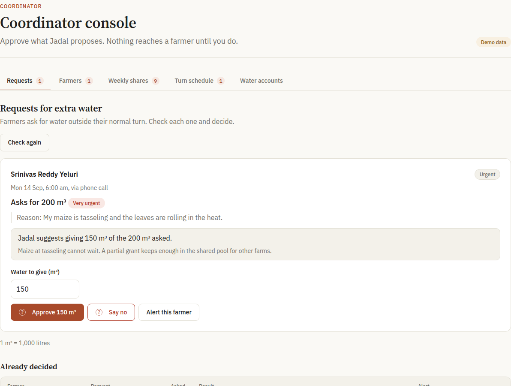
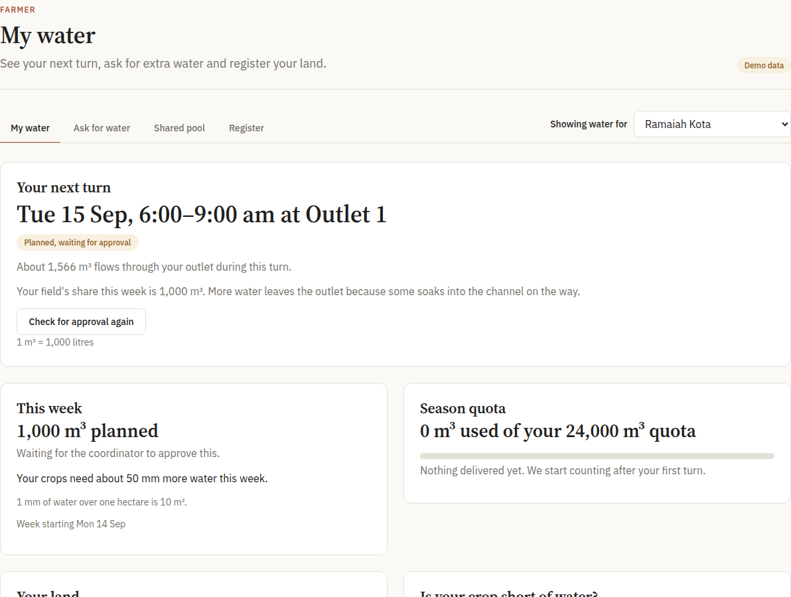
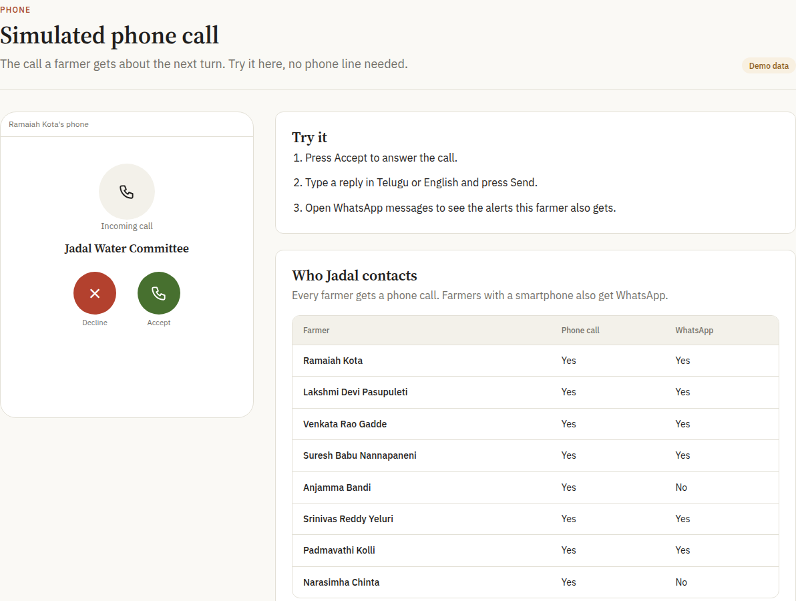

A case study in fairness at the tail of the canal. The scenario is modelled on Kondaveedu Minor, Andhra Pradesh. All figures are from the demo scenario, not field gauges.
A three-kilometre earthen canal with eight farm outlets.
3 kmReach of the minor canal, head to tail.
8Outlets, each feeding farms downstream of it.
UnlinedBare earth. Water seeps out all along the way.
Source: demo-scenario.json (3 km, 8 outlets, unlined). Outlet distances are on the canal map in the app.
Warabandi: every farm gets the same turn.
Wara means turn. Bandi means fixing. Each farm receives the canal outlet for a fixed time slot on a weekly roster. On this canal, every farm gets equal hours.
Outlet 1
Outlet 2
Outlet 3
Outlet 4
Outlet 5
Outlet 6
Outlet 7
Outlet 8
Head of the canalEight equal turns on the weekly rosterTail
The register records time, so it calls every turn fair.
An hour at the tail is not an hour at the head.
0.145m³/s at outlet 1
3.5% of the flow already lost to seepage
0.106m³/s at outlet 8
29.4% of the flow lost to seepage
Same hour of turn, about three-quarters of the water: 0.106 ÷ 0.145 ≈ 0.73.
Modelled Q(x) = Q₀·e^(−kx), Q₀ = 0.15 m³/s, k = 0.00012 per metre, from the seed scenario. Model output, not gauge readings.
Same hours or same water?
Outlet 1head of the canal
Turn length
Water delivered
Outlet 8tail of the canal
Turn length
Water delivered
Illustration from the two modelled flows (0.1447 and 0.1059 m³/s). Real turns are computed in packages/core.
Give each farm the volume it needs, then solve for time.
Ti = Vi ÷ Q(xi)
Ti
How long farm i holds the outlet.
Vi
The volume farm i needs this week, from the crop-water model.
Q(xi)
The flow that actually reaches its outlet after seepage. The tail's turn runs longer.
Computed in packages/core (roster, hydraulics, crop need, ledger). No water arithmetic exists anywhere else in the codebase.
Models suggest. Code calculates. A person approves.
LLMs propose
Agents read farmer requests and draft options. A tool marked gated: true returns a proposal and never applies it.
packages/contracts/src/agents.ts
The core computes
Pure TypeScript: crop need, hydraulics, roster, ledger. No network, no I/O, no model calls.
packages/core
The coordinator approves
Nothing reaches a farmer until a human decides. The agent loop records the proposal and commits nothing itself.
apps/api/src/agents/loop.ts
One screen to approve.

Coordinator console · Demo data

Farmer view · Demo data
A call in Telugu, and a ledger that has to balance.
Farmers without smartphones get a spoken call about their next turn.
Every cubic metre is recorded double-entry, and the ledger is checked for conservation: debits equal credits.
The Telugu copy is machine-written and still needs a native speaker's review. SMS and WhatsApp are simulated only. Nothing is sent over those channels.

Simulated call · Demo data
Fifty-four seconds.
Launch film, version 3. Footage from the app in mock mode. Telugu captions are machine-written.
What we measured.
862
tests passing, typecheck cleancore 180 · web 114 · api 568, run on the merged build
3
calls per 60 seconds per handset, at mostsliding window, atomic under 12 simultaneous requests
1
route is allowed to place a calla static test fails on any bypass, shown failing on a planted one
605
interface strings in English and Telugu, key for keyparity checked on the current build
Measured on the merged swarm branch (pnpm -r typecheck, pnpm -r test). One later web display change passed its own typecheck and tests. Nothing here has been merged into the live branch yet.
We checked our own claims. Some failed.
“The tail meets about 42% of need.” Core says otherwise. On the seed, planned need-met is 280.8% at the head and 205.5% at the tail: over-allocation, Gini 0.059. The 42% came from an illustrative mock.
The fairness comparison read zero. In the live path need-met was capped at 100%, hiding the head–tail gap. Fixed by separating planned from delivered.
The urgency score was a constant 0.15. It now reports “unscored” when nothing matches.
A model's QA passed a video with invented ledger figures. A 40-line script caught them. The numbers were removed.
What is still simulated or open.
SMS and WhatsApp are simulated. Nothing is sent.
Live calls are not demo-reliable. The Twilio account is a trial with a $0 balance.
Telugu copy is machine-written and awaiting native review.
Groundnut example: the doc says 462.12 m³, the shipped table gives 417.69. An owner must choose.
Equal volume on the raw season seed starves the tail. Per-week or per-season entitlement is a product decision.
Contract changes (climate inputs, place_call gating) are written up and wait on a contracts-ok label.
Triage display: an unscored request still shows a low-urgency pill.
Workflow audit: “alert the coordinator” does not yet alert.
Fair water, verified.
LLMs propose. The core computes. The coordinator approves.